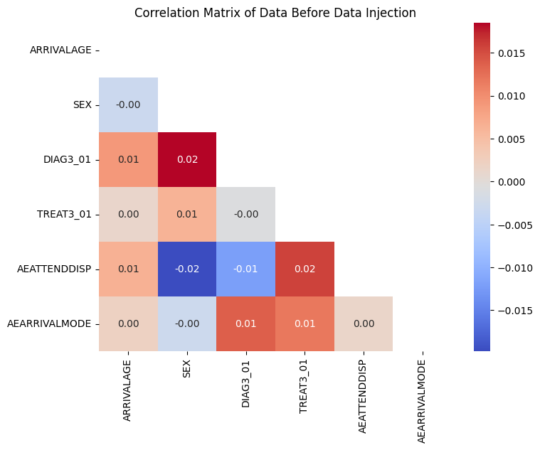

Synthetic Data for the NHP Model
An Internship Project at The Strategy Unit, NHS
Introduction
This document details an internship project focused on exploring and developing synthetic data generation techniques for the New Hospital Programme (NHP) demand prediction model. The primary goal is to address the challenge of data accessibility and privacy, enabling the NHP’s open-source model to be truly reproducible, shareable, and evaluable without compromising sensitive real patient data.
The project’s primary objective was to inject realistic, multivariate relationships into the data, which were absent from the original dataset. The methodology involved a rule-based data synthesis approach using Python and the Pandas library.
Background and Problem Statement
The Challenge of Healthcare Data
Healthcare data is highly sensitive and subject to strict confidentiality rules. This makes it difficult to share real patient data for research, development, and collaborative efforts. To address this, the NHS has developed an artificial HES dataset. While this dataset successfully protects patient privacy, it lacks the complex, real-world relationships that are essential for training accurate predictive models.
Benefits of Synthetic Data
Privacy
Synthetic data is crucial for protecting patient confidentiality. Synthetic data are artificially generated to mimic real-world data without compromising the identity of individuals. By ensuring personal identifiable information are completely absent, synthetic data safeguards patient confidentiality. This mitigates the risk of data misuse or breaches. This allows for open sharing and collaboration, eliminating the need for complex and time-consuming data governance approvals and strict access protocols.
Accessibility & Reproducibility
Real patient data is often limited in its accessibility due to its sensitive nature, creating significant obstacles to research and development. Strict privacy regulations, like the General Data Protection Regulation (GDPR), contribute to these limitations. The use of synthetic data enables broader research and testing by making a representative dataset accessible to a wider audience.
This accessibility has a direct benefit, reproducibility. Because the data is not sensitive, it can be shared with the model’s code. Reproducibility ensures that the model’s performance can be consistently validated by the community, a basis of open-source development and scientific ethics.
Bias Mitigation
Synthetic data offers a unique opportunity to mitigate bias present in real-world datasets. Real-world data can often contain historical biases, such as the under-representation of certain demographic groups or a lack of data on specific medical conditions. Synthetic data generation addresses the need for training algorithms on unbiased data which is large enough and has the needed statistical relationships. By providing more balanced datasets, synthetic data can ensure the delivery of fair treatment recommendations across diverse patient populations. Synthetic data can be used to directly correct biases present in real-world data by, populating unprivileged groups to reduce demographic disparities.
Current NHS Artificial Data Limitations
The existing NHS artificial data, while perfect at preserving patient privacy, it does not preserve the complex relationships and dependencies that exist between different attributes in reality. This is a limitation for any predictive demand modelling.
Lost Relationships
The main issue is that while the dataset accurately reflects univariate distributions of attributes (for example, containing the correct number of 49-year-olds and the correct number of females), it fails to capture the complex, multivariate relationships between them. For instance, the dataset might tell you how many 49-year-olds and how many females, but it cannot tell you how many 49-year-old females with diabetes in a specific postcode. This lack of relation makes the data unsuitable for training predictive models required for tasks like demand forecasting and patient intervention. The official NHS Digital documentation even explicitly states that the data is not intended to be used for building statistical models.
Impact on NHP Model
The New Hospital Programme (NHP) model is reliant on multivariate relationships for accurate demand prediction. Without these complex relationships, models trained on the existing artificial HES data would be unreliable and inaccurate.
The lack of these relationships presents a significant problem to identifying which patients are candidates for a mitigator, a key function of the model. The inability to simulate real-world interventions makes the output for demand prediction unreliable and invalid, directly impacting the model’s forecasting accuracy and its ability to support clinical decision-making.
The Internship Project
This report will detail my internship project, which focuses on addressing a limitation in the NHS’s artificial data.
This report will begin by exploring the problem, highlighting how the current artificial dataset, while protecting privacy, lacks the complex, real-world relationships essential for predictive modelling. Next, the solution is presented, detailing the methodology developed to inject these realistic relationships into the data. The results are then examined, using a correlation matrix to visually demonstrate the enhanced dataset.
Finally, the impact of this work will be discussed. The report will conclude by exploring future work and advanced techniques, such as Generative Adversarial Networks (GANs), and what could be done to further improve the project.
Methodology
The project’s approach was a rule-based data enhancement methodology. The goal was to add key relationships to the existing 10,000-row artificial HES dataset rather than generate a new one from scratch. This provided a practical and efficient solution that fit within the project timeline and abided by the requirement of not using real patient data. The entire process was implemented using Python and the Pandas library.
Input Data
This project used the existing, non-disclosive A&E 10,000-row artificial HES dataset provided by NHS England. This dataset, which consists of 165 attributes related to emergency care, is used as the starting point for the data enhancement process.
Key columns used in this project
The following key columns were chosen based on their clinical relevance and their importance in demand prediction within the NHP model:
- AEATTENDDISP: The patient’s discharge status.
- AEARRIVALMODE: How the patient arrived at the facility.
- DIAG3_01: The patient’s primary diagnosis.
- SEX: The patient’s gender.
Process
The process for enhancing the artificial dataset followed these steps
Initial Data Validation
The project began by generating a correlation matrix in Python to confirm the lack of meaningful linear relationships between numerical attributes. This provided clear justification for the data enhancement and established a baseline against which the enhanced dataset could be measured. This visualisation confirmed the lack of relationships in the original data.

Relationship Identification & Enhancement
Based on the requirements of the NHP demand model, two key inter-column relationships were identified:
An Ambulance Rule: This rule creates a logical relationship between arrival mode and discharge status. If AEARRIVALMODE is 1 (arrival by ambulance), then AEATTENDDISP is set to 1 (hospital bed). This simulates a realistic scenario where patients arriving via ambulance are highly likely to be admitted for more serious conditions.
A Female Rule: If DIAG3_01 is either 28 (Obstetric conditions) or 29 (Gynaecological conditions), then SEX is set to 2 (female). This corrects an illogical relationship that may have existed in the original, randomly generated data.
Using Python and the Pandas library, a script was developed to create realistic relationships in the artificial dataset. The script iteratively checked each row of the dataset and, where applicable, adjusted the values in the target columns to create these realistic, inter-column relationships.
Output & Validation
The final output will be an enhanced artificial HES dataset. This new dataset now contains the key inter-column relationships that were missing from the original.The dataset was validated to confirm that the newly created relationships were present by generating a new correlation matrix.This confirms that the newly created relationships are present while also ensuring the data remains non-disclosive and suitable for the open-source NHP model.

The Results
Before Enhancement
The initial correlation matrix showed no meaningful linear relationships between the attributes. This confirmed that the original dataset was unsuitable for modelling and justified the need for data enhancement.
After Enhancement
The new correlation matrix confirms that the rules successfully injected relationships. The correlation values for the target columns have increased. This result provides clear evidence and effectiveness of the project’s methodology and its ability to create a functional dataset suitable for the NHP model.
Conclusion
In conclusion, this internship project successfully addressed a critical limitation of the NHS’s artificial HES data by transforming a static, non-disclosive dataset into something useable. The rule-based data synthesis methodology proved to be an effective and practical solution, successfully injecting key inter-column relationships that were missing from the original data.
The project’s success was confirmed through a comparison of correlation matrices, which visually demonstrated the created relationships in the enhanced dataset. The output is valuable , as it enables more accurate and reliable demand prediction using the NHP model. The work has created a foundation that can be expanded in the future through the exploration of more advanced techniques, such as Generative Adversarial Networks (GANs).
Summary of Findings
- The Problem: The existing NHS artificial data, while great for privacy, was not suitable for the NHP model due to a lack of meaningful relationships between attributes.
- The Solution: A rule-based data synthesis approach was used to inject two rules, successfully creating these relationships.
- The Result: The enhanced dataset was validated to confirm the new relationships, making it a reliable and non-disclosive resource for the NHP model.
- The Impact: This work enables the NHP model to produce more accurate demand predictions and provides a foundation for identifying which patients are candidates for a mitigator.
Future Works
While the rule-based approach was a practical and effective solution, future work could explore using Generative Adversarial Networks (GANs). As a deep learning-based method for synthetic data generation GANs can learn more complex, non-linear relationships that a rule-based system would miss, creating an even more realistic synthetic dataset.
Recent studies have found that deep learning methods, including GANs, were used in 72.6% of sources for synthetic data generation in healthcare, with 75.3% of these generators implemented in Python.
How GANs Generate Synthetic Data
GANs use an adversarial process involving two neural networks, a generator and a discriminator. The generator produces synthetic data, while the discriminator evaluates its reliability by predicting whether the data is real or synthetic. This competitive process forces the generator to produce better realistic data that mimics the statistical properties and data distribution of the real data.
Advantages and Weaknesses of GANs
While GANs appear to be a more robust solution to address data scarcity and privacy problems in healthcare, it is important to consider their advantages and challenges. Since developing, training and validating GANs is time consuming, it was not selected as an approach due to the likeliness of it extending past the internship.
Advantages
- Highly effective at generating privacy-preserving synthetic data, making it harder to identify individuals.
- Capable of handling high-dimensional and complex data.
- GANs generate highly realistic data that closely mimics the statistical properties of real data.
Weaknesses
- GANs require significant computational resources and time for training, especially on large and high-dimensional datasets.
- They can be complex to implement and manage due to their complex architectures and the need for careful hyperparameter tuning.
- Accurate synthetic data, while useful, may carry a higher risk of re-identification if not carefully managed.
In conclusion, the use of Generative Adversarial Networks (GANs) offers a powerful and versatile approach for generating diverse and high quality synthetic data. This data could be used to train AI models for complex tasks such as hospital demand prediction, which is the ultimate goal for the NHP model.
This is could be an important advancement in the healthcare space, as it provides a path to creating datasets that can potentially replace sensitive HES data. By using non-disclosive synthetic data for model prediction, it not only protects patient privacy but also offers a solution for building models that can be shared and used more widely.
Furthermore, this work provides a foundation for creating customisable synthetic data tailored to the specific needs and patient demographics of individual hospitals. This ability to create fit-for-purpose datasets is crucial for developing accurate and ethical predictive models.
Resources
New Hospital Project Documentation: The New Hospital Programme Demand modelling tool documentation site.
NHP GitHub Repository: The official repository for the NHP demand model, containing the source code.
NHS England HES Data: The official website detailing the artificial data project.
Synthetic Data Generation Paper: A research paper detailing various techniques for generating synthetic data in healthcare, including GANs and probabilistic approaches.
Synthetic Data in Medicine: A research paper detailing the legal and ethical considerations of using synthetic data, particularly for patient profiling.
Characterization of Synthetic Health Data: A research paper detailing rule-based AI models for synthetic data.